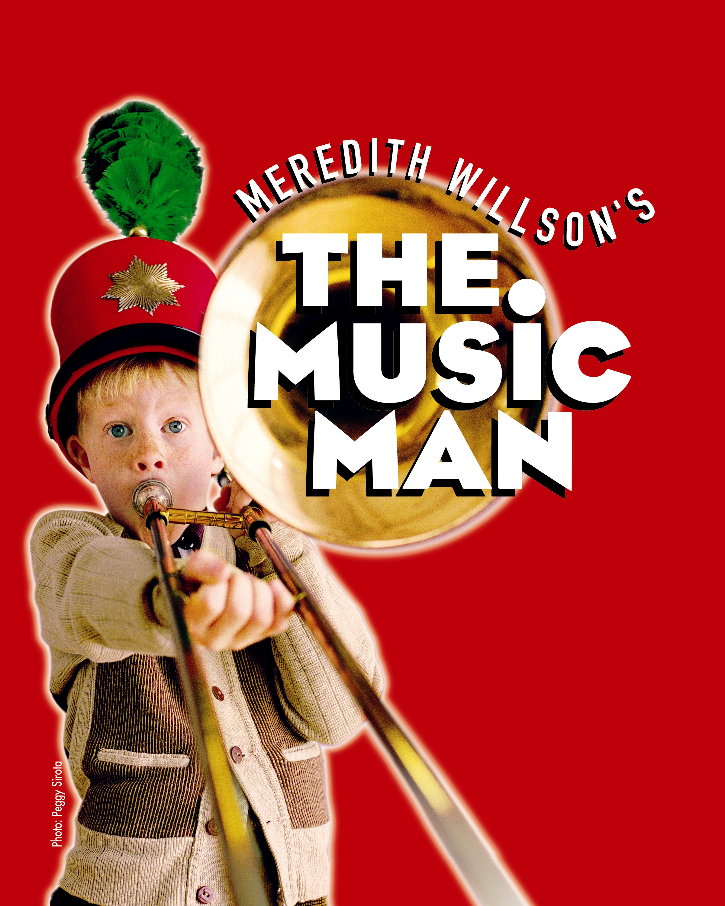

|
Summer Youth Theatre
June to August
Curtain Call’s Summer Youth Theatre:
For nearly twenty-five years, Curtain Call's Summer Youth Theatre has provided creative outlets for youth ages ten to twenty-one
both on stage and behind the scenes. Overall, our Summer Youth Theatre provides nearly 100 hours of creative enrichment and
interaction for youth with common interests under the guidance of a team of area professionals. (Participation fee $50.)
Curtain Call's Summer Youth Theatre announces its 2014 production:

Music and lyrics by Meredith Willson,
book by Franklin Lacey and Meredith Willson.
Directed by Meredith Walker,
Music Direction by Eric K. Johnston,
Choreography by Donna Fox
Traveling salesman Harold Hill arrives at staid River City, Iowa intending to cheat the community with his standard scam of offering to
equip and train a boy's marching band, then skip town with the money. The local librarian is suspicious, and Harold must divert her from
exposing him, but things go awry when he falls for her and inadvertently enriches the town with a love for music.
YOU MUST BE ENTERING 4TH GRADE THRU AGE 21 TO PARTICIPATE.
CAST LIST
PROF. HAROLD HILL: Brendan George
MARIAN PAROO: Meaghan Elliot
MARCELLUS WASHBURN: Will Bruno
MAYOR SHINN: Andrew Restieri
EULALIE SHINN: Rebecca Borowik
MRS. PAROO: Maggie Carucci
WINTHROP PAROO: Daniel McArthur/Michael McArthur
AMARYLLIS: Abigail Agabs/Nina Paolini-Rota
ZANEETA SHINN: Nancy Leville
TOMMY DJILLAS: Kevin Collins
THE QUARTET: Jacey Squires: Aidan Meachem
Ewart Dunlap: Jason Nekritz
Oliver Hix: Matthew McArthur
Olin Britt: Winston Sinclair
PICK-A-LITTLE LADIES: Mrs. Squires: Claire Leville
Maude Dunlap: Victoria Iparraguirre
Alma Hix: Julia Siewert
Ethel Toffelmeier: Savannah Belle Miller
Pick-A-Little Ensemble: Mary Cate Muller,
Maeve Ronan, Jessie Tarzia
GRACIE SHINN: Kristina DeLelle
CHARLIE COWELL: Kyle McArthur
ENSEMBLE: Ries Allyn
Laina Ciacciarella
Emily DiGiacomo
Caroline Eagleton
Cara Grasso
Rachel Kadlick
Sarah Kadlick
Courtney Kollar
Justin McArthur
Kyle McArthur
Grace McEvoy
Camilla Montoya
Katie Priscott
Betsy Sachs
Talia Shapiro
Ava Spinelli-Mastrone
Franki Spinelli-Mastrone
Livia Spinelli-Mastrone
Samuel White
THE COMMITMENT:
First Company Meeting and Ad Canvass Day (mandatory), June 14 from 10am to 2pm.
Rehearsals begin June 16, Monday to Thursday evenings from 6:30pm to 9:30pm and some weekends during the day (after July 4th weekend).
Crew work calls are primarily Saturdays from 10am to 4pm beginning June 21. By mid-July, some crew members may be called Monday to Thursday in the evening. Crew members must attend final run thrus the week of July 28.
No cast or crew conflicts beyond July 21 accepted. Cast and crew members must be available for tech weekend August 2 and 3, dress rehearsals August 4 and 5, and all performances.
Rehearsals will go as late as 11:00pm August 4 and 5.
Performances: August 6, 7, 8, 9, 13, 14, 15, 16 at 7:30pm and August 10 and 16 at 2:00pm.
Cast and crew must be available for tear down and strike August 17.
For more information contact Education Director: Brian J. Bianco at brian@curtaincallinc.com .
Below are images from our 2012 production, KISS ME, KATE:
"Mr. Graham says I don't need diamonds...I glitter natural!"
"She's a maid mad to marry any Tom, Dick or Harry!"
"He's come to wive it wealthily in Padua!"
"Were thine that special face? Wherefore those leather pants?!"
"Always leave 'em wanting more...more encores that is!"
Below are images from our 2011 production, LES MISERABLES:
"Kyle McArthur (Stamford) as Gavroche."

"Will Strong (Stamford) as Jean Valjean."
Below are images from our 2010 production, ONCE ON THIS ISLAND.

"Erzulie, Mother of the Earth, teaches TiMoune that Mamma Will Provide."
"If the stage managers ain't happy - ain't NOBODY happy! Stage Managers Erica Blumrosen and Sara Zimmerman and Assistant Stage Manager Julia Zimmerman (all of Stamford) rejoice at the end of another highly productive rehearsal.."
Below are images from our 2009 production of Rodgers and Hammerstein's THE KING AND I.

" Lea Torelli (Old Greenwich) as the Angel"

"Katherine Breen (Stamford) as Tuptim"
Curtain Call Youth Board 2013-2014
Co-Presidents - Brendan George and Will Hart
Vice President - Julia Zimmerman
Secretary - Rebecca Borowik
Treasurer and Fundraising Manager - Danny Ward
Historian - Matthew Sperrazza
Volunteer Coordinator - Stephanie Hausman
Board Members:
Addison Albano, Maggie Carucci, Jordan Costa, Bailee Esposito,
Max Helfand, Krystina Lyons, Santiago MacLean
Curtain Call Education Director and SYT Producer:Brian J. Bianco
Youth Board Advisor: Tom DeSalvo
PAST SYT PRODUCTIONS
- 2013 Into the Woods & Disney's Alice in Wonderland, Jr.
- 2012 Kiss Me, Kate
- 2011 Les Miserables: School Edition
- 2010 Once on This Island
- 2009 The King and I
- 2008 Seussical
- 2007 Peter Pan
- 2006 The Wiz
- 2005 Bye, Bye, Birdie
- 2004 Oklahoma
- 2003 Brigadoon
- 2002 The Pajama Game
- 2001 Babes in Arms
- 2000 Big: The Musical
- 1999 Hello, Dolly!
- 1998 Cinderella
- 1997 How to Succeed in Business Without Really Trying
- 1996 Annie
- 1995 Once Upon a Mattress
- 1994 Gypsy
- 1993 Bye, Bye, Birdie
- 1992 Li'l Abner
- 1991 The Me Nobody Knows
Register For Summer Youth Theatre
|